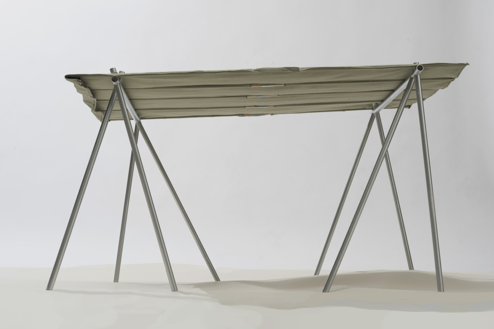
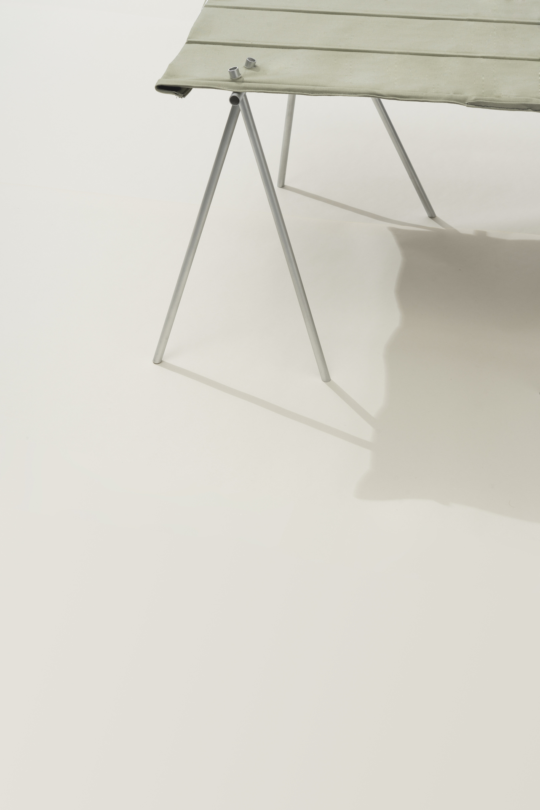
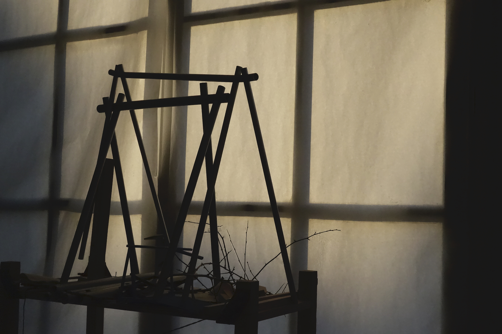
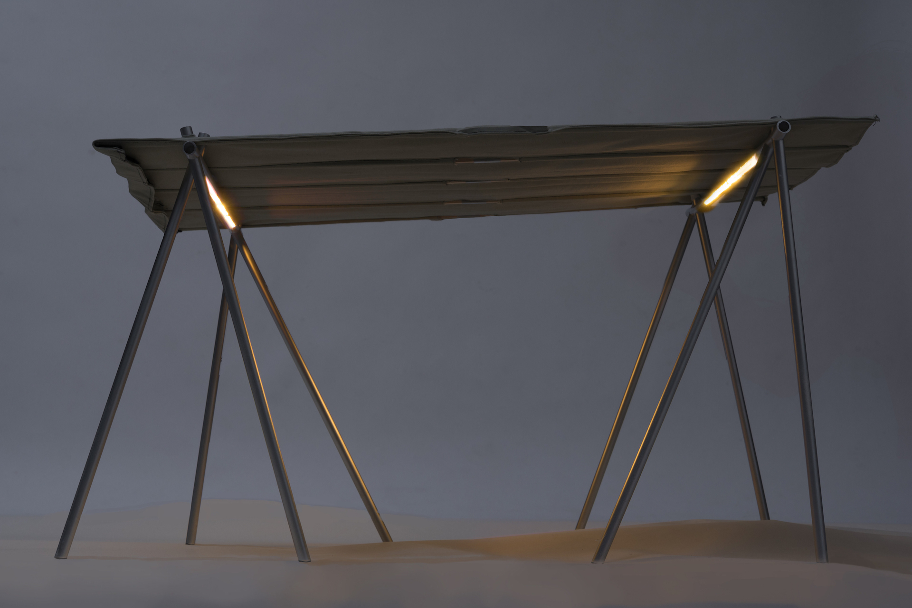

<!DOCTYPE html>
<html>
</html>

<head>
  <meta charset="UTF-8">
  <title>Juliette Collin</title>
  <meta name="viewport" content="width=device-width, initial-scale=1">
  <link rel="stylesheet" href="juliettecollin-projetsS9.css">

</head>

<body>
<section class="content-container ">

  <div class="content-orange">

        <div class="header">Juliette Collin © 2020</div>

        <a href="juliettecollin-projetsS9.html" class="retour">Retour</a>
        <a href="#abri" class="texte-projet">Abri 4x4
            <em>2020</em><br>
            « 4x4 » est un abri destiné à accueillir les différents évènements organisés par l’association « Au Sens de Barge » sur les rives de Seine. 
            Léger et démontable, deux personnes sont nécessaires à son installation. Grâce à leur hauteur réglable, les pieds de cet abri s’adapte à n’importe quelle topographie de quai ou terrain. Un des portiques est positionné plus bas que l’autre afin d’incliner la couverture et favoriser l’écoulement de l’eau.  Les pieds sont remplis d’eau pompée de la Seine pour lester l’abri. 
          </a>
        </div>

  <div class="content-violet">

    <div class="flex-container-projet">
      <div>
                  
      </div>

      <div>
        
      </div>
      <div>
        
      </div>
      <div>
        
      </div>

      <div>
        
      </div>

      <div>
        
      </div>


    </div>        

  </div>
</section>    

</body>

